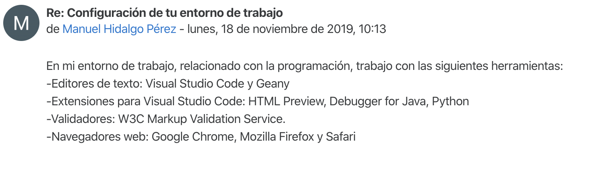
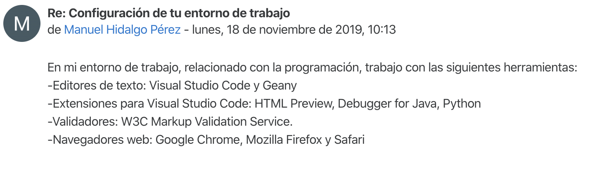

Ejercicio 1: Participa
En este ejercicio realizamos una entrada en el foro general del módulo en el que hablamos sobre la configuración de nuestro entorno de trabajo.
Podemos ver captura de nuestra participación, y el enlace al mismo:

En este ejercicio realizamos una entrada en el foro general del módulo en el que hablamos sobre la configuración de nuestro entorno de trabajo.
Podemos ver captura de nuestra participación, y el enlace al mismo:
